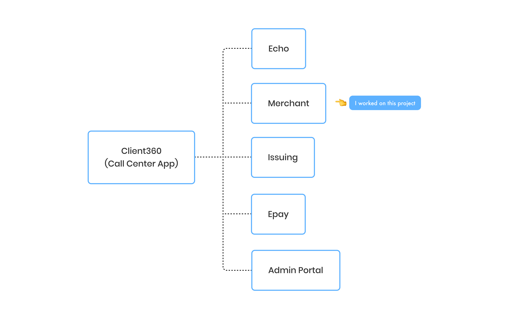
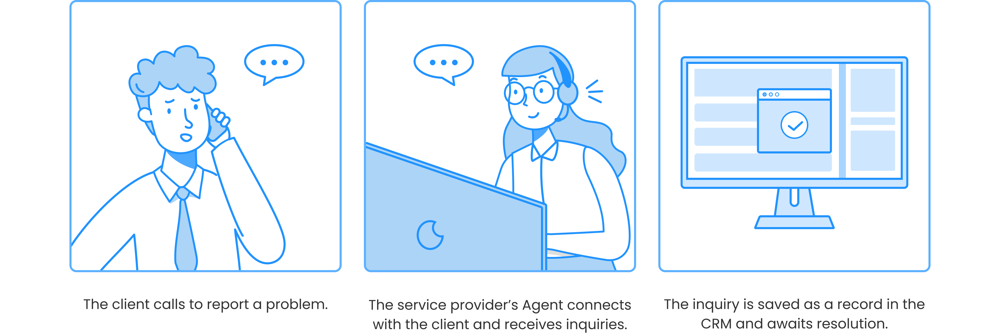
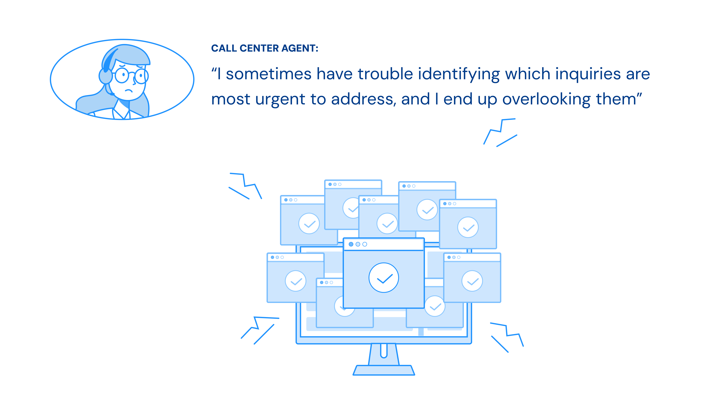
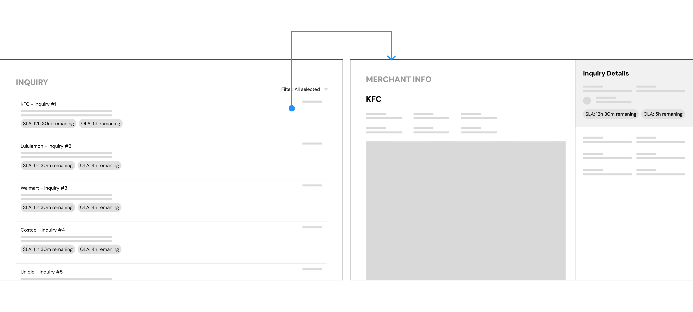
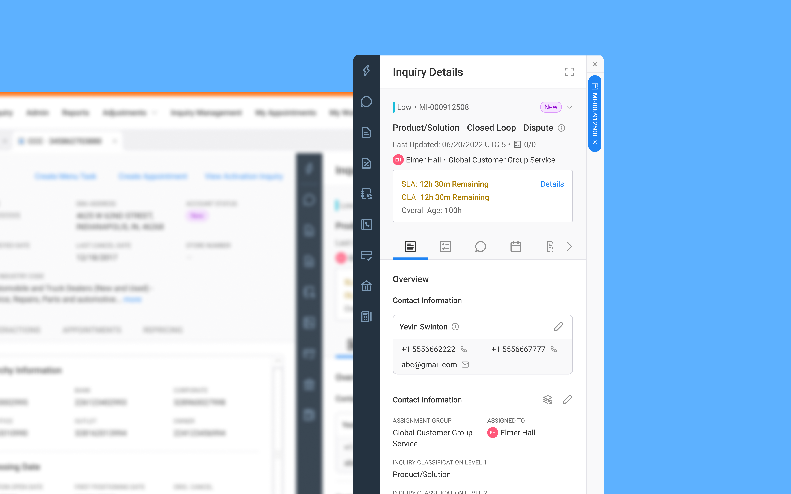

Implementing SLAs and OLAs to Help Call Agents Track Tasks and Improve Accountability.
ROLE:
UX Designer
TIMELINE:
May - July, 2022
DELIVERABLES:
Website Design
PROJECT OVERVIEW:
The SLA/OLA feature is part of a digital product called Merchant, one of several tools within an ecosystem designed for call centres. This feature was developed to help call centre agents manage their tasks more effectively. It displays the remaining time directly on the interface, showing both the time agreed upon internally to resolve each inquiry and the time agents have left to meet those expectations for callers representing merchants. The project was delivered in collaboration with a cross-functional team, including a product owner, developers, and quality assurance specialists.
Introduction
During my time at Aperia, I worked as a UX Designer on a digital product called Merchant. Merchant is one of the applications within a call centre ecosystem called Client360. In the diagram below, I’ve illustrated how Merchant fits into the Client360 ecosystem.
Context
Assume that one day, the Manager of KFC calls Bank of America to inquire about the current transaction because something appears to be incorrect. Because Bank of America outsourced the call center service, all calls will be received and answered by call center agents via Client360.
When the agent answers the phone, the KFC manager describes the nature of the call and requests assistance. The agent will enter the call information into the Merchant CRM and create an inquiry. When the inquiry is successfully created, it will be handled by a specific team.
The Problem
Each call centre agent receives up to 50 inquiries per day, contributing to hundreds of unresolved cases stored in the Merchant CRM. These inquiries vary in priority. Some are urgent and require immediate attention, while others can be addressed later. However, agents sometimes overlook these distinctions, leading to delays that can negatively impact business performance.
Goal
The goal was to ensure that agents consistently resolve inquiries based on priority, starting with the most urgent. To address this, I collaborated closely with the product owner after receiving the problem statement from our client. Together, we explored possible solutions through extensive desk research and discussions. Ultimately, we decided to implement an SLA and OLA feature, similar to those used in other products on the market, to address the problem.
But, what are SLA and OLA?
• SLA (Service Level Agreement) is a formal agreement between the client (Merchant) and the service provider. It ensures that the provider's agents complete their tasks within a specified timeframe. If they fail to do so, they may face penalties.
• OLA (Operational Level Agreement) is an internal agreement within a team. It defines the expected timeframes for completing tasks to support the commitments made in the SLA.
So, what did I do exactly?
To solve the problem, I first worked closely with the Product Owner to clarify the client's ambiguous requirements. We aligned on the goals and defined what success would look like.
Next, I conducted secondary research to understand how other products in the market handled similar challenges, using those insights to guide our approach.
Once the direction was clear, I sketched out low-fidelity wireframes to visualize the SLA/OLA feature and presented them to stakeholders for feedback. This helped us align early and make informed design decisions.
Image 1: The wireframe above shows the concept I designed based on discussions with the Product Owner and client feedback.
I then designed the final high-fidelity mockups, integrating the SLA/OLA feature directly into the Merchant CRM interface to help agents prioritize their tasks more effectively.
After handing off the designs to the scrum team, I stayed involved throughout the development process by following up regularly and offering support whenever the team encountered questions or blockers.
Image 2: The final design of the SLA/OLA feature was integrated and visualized within the Merchant CRM interface.
Result
The client gave positive feedback on the feature, saying the design was clear and easy to spot while working on tasks. It also helped boost the agents’ confidence because they knew they had a tool to support them in managing their workload.
Challenges and Limitations
One of the main challenges I faced was interpreting and clarifying ambiguous requirements from the client. The initial problem statement lacked detail, so I worked closely with the Product Owner to dig deeper and ensure we were solving the right problem. Another key challenge was defining clear logic for the SLA/OLA feature. Since the feature impacted how agents prioritized tasks, it was crucial to make sure the behavior was well-defined and aligned with business expectations.
A major limitation of the project was that we were unable to gather direct user feedback on the SLA/OLA feature. Due to time and access constraints, we had to rely on stakeholder insights and secondary research to guide our design decisions.